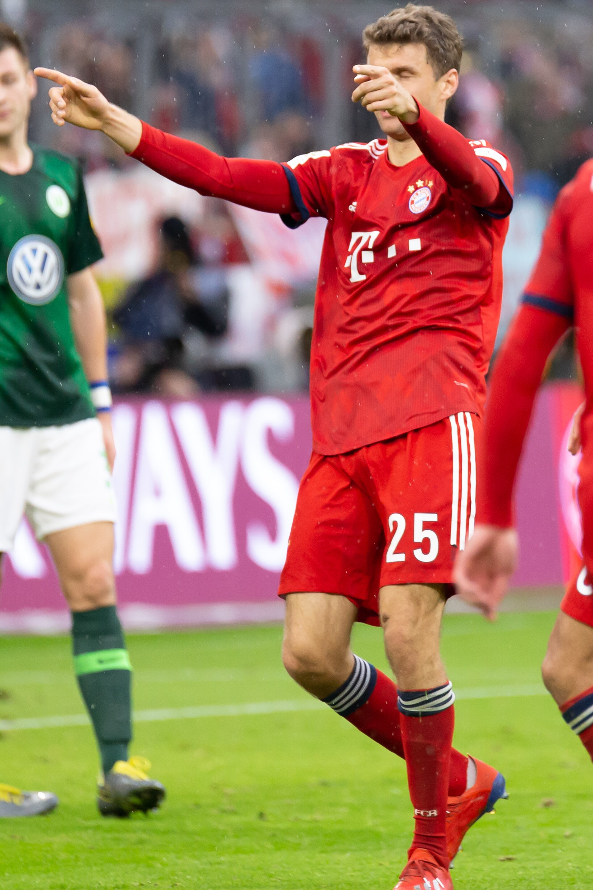

Eligible contenders
— Players in the season cohortUEFA CHAMPIONS LEAGUE · PLAYER INTELLIGENCE
The contender index.
Explore the players, performances and model estimates shaping the Ballon d'Or conversation through a Champions League lens.
Performance analysis and model estimates · Not official award odds

Photo: Steffen Prößdorf · CC BY-SA 4.0Leading performance score
— Model score · out of 100Top cohort estimate
— Relative model estimateSEASON LEADERS
Top three contenders
Select a season to load featured players.
THE FORM GUIDE
Contender form
Contenders are calculated from the selected season's eligible UCL cohort.
RANKED BY THE MODEL
Leaderboard preview
Select a season to load the leaderboard.